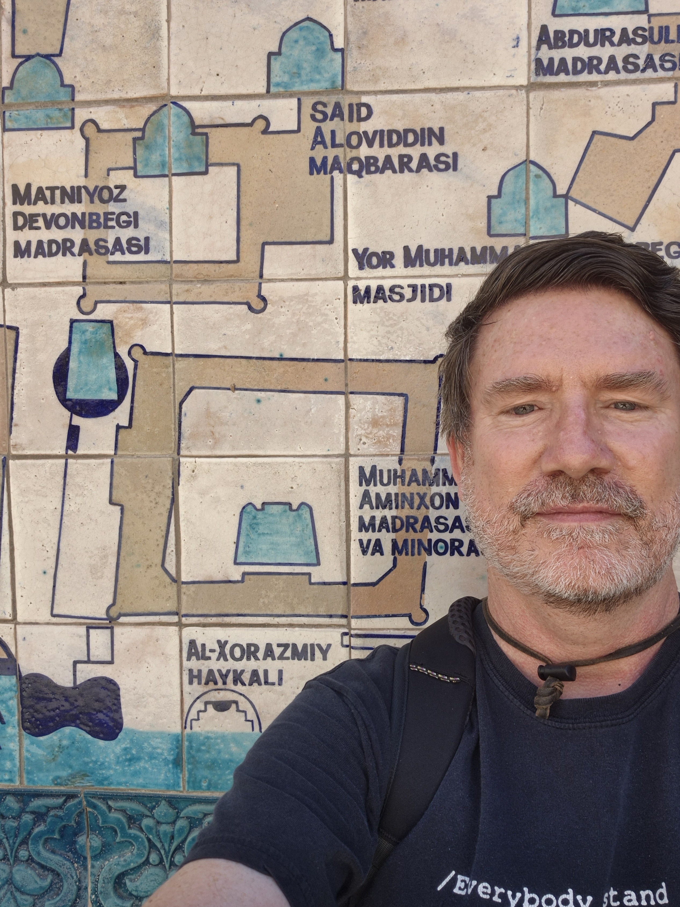

|

This photo is from 2024, visiting Khiva, Uzbekistan. This is celebrated as the birthplace of Muhammad ibn Musa al-Khwarizmi (Al-Xorzmiy in the pic's Uzbek latin script), polymath and eponym of algorithms. CONTACT DETAILS
|
Workwise, I'm a professor in the School of Computing of Macquarie University, in Sydney, Australia. (Here's my official university page.) Before Macquarie, I was a research fellow at the University of Pennsylvania's Institute for Research in Cognitive Science. Here is how ChatGPT described me on 10 Feb 2023 based on a colleague's prompt. It contains some of the sorts of hallucinations that neural language models are prone to (see also discussions of possible reasons for these, and a survey of research on the issue); I'll leave it open as to what ChatGPT has hallucinated about me. RESEARCHI work in natural language processing (NLP) / language technology / computational linguistics, and am a member of the Machine Learning and Natural Language Processing research group. Specifically, I've worked on (among other things) privacy and NLP, native language identification, machine translation, natural language generation, and sentiment analysis (with a focus on how sentiment affects language choices). Some related info:
Service activities related to research:
TEACHINGIn semester 1, 2024, I'll be teaching
In semester 2, 2024, I'll be on sabbatical. I've taught a range of units over the years. I also think it's useful for students to know something about what their teachers are likely to be like. As one source of information, there's the sporadic appearance of the Alternative Calendar, but computing units are hardly ever mentioned there, and it usually sounds as if there's only ever a couple of (disgruntled) respondants. So, in case you're thinking of taking a class with me, here's a link to evaluations for several of my units. OTHERSome non-work things. I'm a member of Macquarie's Ally Network. |
Last updated 25 June 2024
{kind=link}